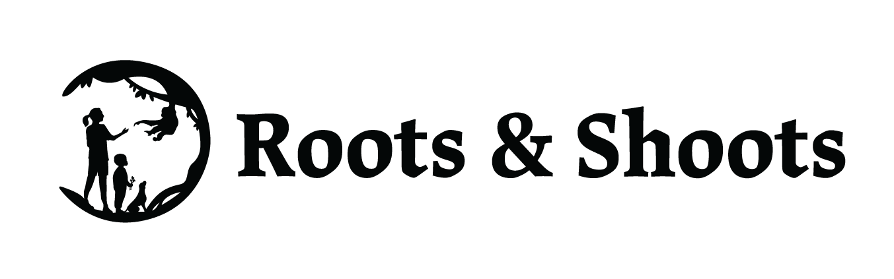

Kit de Marca Digital Roots & Shoots Colombia
Este kit ha sido creado para facilitar el uso consistente y efectivo de la identidad visual y comunicacional de Roots & Shoots Colombia. Su propósito es amplificar nuestra visibilidad e impacto, operando siempre con la máxima eficiencia y proactividad, y con un enfoque de costo cero o ultra-bajo, empoderando a nuestra red de voluntarios y grupos locales.
Filosofía y Tono de Voz
En cada comunicación, reflejamos el espíritu, la esperanza y la ética de la Dra. Jane Goodall. Nuestro tono es siempre positivo, esperanzador, empoderador, respetuoso y compasivo, reflejando la interconexión entre las personas, los animales y el medio ambiente.
**Mensajes Clave:**
- "Cada individuo importa y marca la diferencia."
- "Cada persona tiene un rol a desempeñar."
- El cambio es posible a través de pequeñas acciones diarias y la acción juvenil como agentes de cambio.
Logotipos Oficiales
El logotipo de Roots & Shoots es nuestra principal herramienta de identificación visual. Es crucial usarlo correctamente para mantener una marca globalmente reconocida y consistente.
Versiones del Logo
**Color Principal (Verde Oscuro)**
Roots & Shoots Green.png
**Negro**
Roots & Shoots Black.png
**Blanco (para fondos oscuros)**
Roots & Shoots White.png
Pautas de Uso del Logotipo
- **No distorsionar:** Nunca estires, comprimas o alteres las proporciones del logo.
- **No cambiar colores:** Utiliza solo las versiones de color proporcionadas.
- **No agregar elementos:** Evita añadir texto o gráficos sobre el logo.
- **Área de Protección:** Se debe mantener un espacio libre alrededor del logo para asegurar su legibilidad y prominencia. Este espacio debe ser, como mínimo, equivalente a la altura de la letra "R" del logotipo.
- **Tamaño Mínimo Recomendado:** Asegura que el logo sea siempre legible, incluso en tamaños pequeños. Para web, no se recomienda usarlo con un ancho menor a 100px.

Paleta de Colores
Nuestra paleta de colores refleja nuestra conexión con la naturaleza y nuestra misión. Estos colores deben usarse para mantener una estética consistente.
Colores Primarios
Estos son nuestros colores principales, ideales para branding central, encabezados y elementos importantes.
Colores Secundarios y de Acento
Estos colores complementan nuestra paleta primaria y se pueden usar para detalles, fondos suaves, ilustraciones o llamados a la acción secundarios.
Para mayor flexibilidad, se pueden usar degradados o tonos (fades) de estos colores en tus diseños.
Uso de variables CSS para colores:
/* Ejemplo de uso en CSS */
.mi-elemento {
background-color: var(--color-primario-verde-oscuro);
color: var(--color-blanco);
}
.mi-boton {
background-color: var(--color-primario-verde-medio);
color: var(--color-negro);
}
Tipografía
La tipografía elegida para Roots & Shoots busca equilibrio entre modernidad, legibilidad y el espíritu amigable de nuestra marca.
Fuentes para Contenido: Poppins y Spartan
Ambas son fuentes de Google Fonts, lo que garantiza su disponibilidad y uso gratuito en cualquier proyecto digital.
Poppins Bold (Títulos y Subtítulos)
Poppins Bold Italic (Para énfasis y citas)
Se utiliza principalmente para títulos, subtítulos y elementos que requieran mayor jerarquía y un estilo distintivo.
font-family: 'Poppins', sans-serif;
Spartan Bold (Énfasis en texto)
La fuente Spartan es ideal para el cuerpo del texto por su excelente legibilidad en pantalla. Úsala para párrafos largos, descripciones y toda la información que necesite ser clara y concisa.
font-family: 'Spartan', sans-serif;
Cómo importar estas fuentes en tu CSS:
/* En la sección <head> de tu HTML */
<link rel="preconnect" href="https://fonts.googleapis.com">
<link rel="preconnect" href="https://fonts.gstatic.com" crossorigin>
<link href="https://fonts.googleapis.com/css2?family=Poppins:ital,wght@0,700;1,700&family=Spartan:wght@400;700&display=swap" rel="stylesheet">
/* Luego en tu CSS */
body {
font-family: 'Spartan', sans-serif;
}
h1, h2, h3 {
font-family: 'Poppins', sans-serif;
}
Iconografía (Imágenes)
Nuestra colección de 20 íconos ha sido optimizada para su uso digital como imágenes PNG. Esto asegura buena calidad visual y compatibilidad universal.
Para usar estos íconos, simplemente inserta la imagen utilizando la etiqueta `<img>`. Por ejemplo, si el ícono de "Descarga" es `16_DOWNLOAD.png`, lo usarías así: `<img src="images/16_DOWNLOAD.png" alt="Descarga">`.
Galería de Íconos
Aquí se presentan todos los íconos disponibles con sus nombres de archivo para referencia.

Horas de Servicio8_SERVHOURS.png

Colaboración10_COLLAB.png

Descarga16_DOWNLOAD.png

Rescate1_RESCUED.png

Países R&S11_RSCOUNTRIES_V1.png

Megáfono4_FEMLEAD_V2.png

Puño Levantado4_FEMLEAD_V1.png

Escolar5_SCHOLAR.png

Bosque14_FORREST_V1.png

Social15_social.png

Email21_EMAIL_V2.png

Compartir16_SHARE.png

Registro19_SIGNUP.png

Sitio Web27_WEBSITE_V1.png

Contacto24_CONTACT_V1.png

Presentación18_PRES.png

Persona22_SINGLEPERSON.png

Video17_VIDEO_V2.png

Búsqueda25_SEARCH.png

Documento20_DOC.png
Uso de íconos con CSS (ejemplo de estilo para imágenes):
/* Para cambiar tamaño de un ícono (imagen) */
.mi-icono-img {
width: 32px; /* Tamaño en píxeles */
height: auto; /* Mantener la proporción */
}
/* En el HTML */
<img src="images/16_DOWNLOAD.png" alt="Descargar guía" class="mi-icono-img"> Descargar guía
Uso y Adaptación del Kit
Este kit es una guía para asegurar la cohesión de la marca Roots & Shoots Colombia. Los elementos visuales y de comunicación son flexibles para adaptarse a diferentes plataformas y necesidades, siempre manteniendo la esencia de la marca. Recuerda que la creatividad con pocos elementos, ejercitando la imaginación, puede generar mucho impacto.
Todos los recursos incluidos aquí están pensados para ser de "costo cero". El uso de fuentes de Google Fonts y la provisión de íconos como imágenes PNG minimizan la necesidad de licencias costosas o software de diseño especializado.
Para cualquier duda o necesidad de recursos adicionales, contacta a la Coordinación Nacional de Roots & Shoots Colombia.